圆是优雅和美丽的。这一章是关于圆这一基本的几何对象的一些有趣事实的集合。
数学家对圆和圆盘加以区分，圆是指那一条曲线，圆盘是指那条曲线及其内部的填充区域。
数学家不使用模糊的定义，我们需要精确！平面上到定点的距离等于定长的所有点组成的图形叫作圆。让我们拿这一点开个玩笑。
首先，一个圆只是点的集合。当然，并非所有点的集合都会形成一个圆。只有那些特别的点。哪些呢？圆是由两个输入信息确定的一组点：一个正数r和一个点X。这两个输入信息确定的圆是距离X的距离为r处的点。点X当然是已知的，数字r是半径。
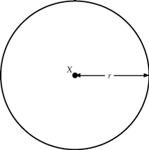
在画出的圆中（纸上的墨水或屏幕上的像素），一个圆有一定的厚度（否则它将是不可见的），但数学意义上的圆绝对地细。
圆是球体的近亲，后者指三维空间中到定点的距离等于定长的点的集合。注意两者的定义几乎是一样的，唯一的区别是圆被限制在平面里。
平面上的点可以由x，y坐标确定。当我们给出一个关于变量x和y的方程式时，满足该方程式的一组点通常决定一条曲线。
例如，可以满足方程式x22+y=1的是一些，但当然不是所有的平面上的点。例如，（1，0）满足这个方程，因为122+0=1。同样，点
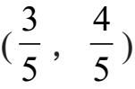
也满足这个方程，原因如下：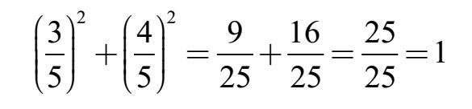
另一方面，点
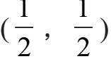
不能满足该方程式，因为
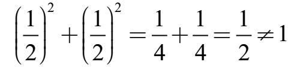
哪些点满足x2+y2=1呢？这正是以（0，0）为圆心，半径为1的圆。
为什么？考虑一个点（x，y）。从（x，y）到横轴绘制一条垂直线段，然后从线段末端到原点（0，0）绘制一条线段，最后再返回到（x，y）绘制出第三条线段，如图所示。这个直角三角形的直角边长度是x和y，因此根据毕达哥拉斯定理（见第14章），斜边长度是
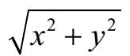
。这是从点（x，y）到原点（0，0）的距离。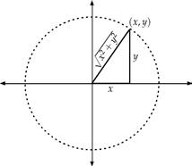
我们只需要距离原点距离为1的那些点，那意味着我们要求
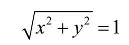
将两边平方得x2+y2=1！
简单来说，以坐标（a，b）为圆心且半径为r的圆用方程式表示为：
(x–a)2+(y–b)2=r2
任意两个不同的点确定一条直线，但任意三个点却可能不在一条直线上。在那种情况下，我们不能画出一条经过这三个点的直线，但是，确切地说，有一个圆能经过这三个点。我们在第13章中对此进行了解释：对于任意一个三角形，每一边的三条垂直平分线的交点落在三角形的外心处。这一点与三角形的三个角等距，所以我们可以以这个点为圆心画出一个经过三角形各顶点的圆。
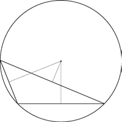
我们可能会问一个问题：三角形如何成为一个半圆的内接三角形？换句话说，我们希望三角形的三边之一是圆的直径。
有一个漂亮的答案：当且仅当其中一个角是90°（换句话说，一个直角三角形）时，三角形是这个半圆的内接三角形。
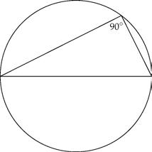
选择四个点ABCD，依次排列在一个圆上。这四点确定了六个距离：四边形的边长|AB|，|BC|，|CD|和|AD|以及两条对角线d1和d2的长度，如图。
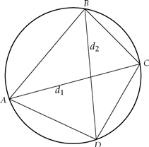
托勒密定理确定了这六个量之间的代数关系：
d1×d2=| AB |×| CD |+| BC |×| AD |
更重要的是，假设我们有一个四边形的边和对角线满足这个代数关系，则这个四边形的四角共圆。
圆与圆之间可以铺得多么紧密？我们假设所有的圆都有相同的半径（比如说半径为1），我们想把尽可能多的圆填充进一个大的平面里。（想象一下，我们想把一层罐头放进一个巨大的托盘里。）
一个想法是把它们排列成一个棋盘状的图案，这样每个圆就会紧靠着另外四个圆，就像下图这样：
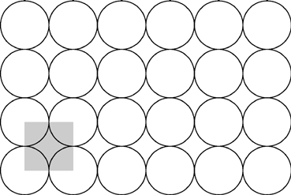
这种填充的效率如何？一种判断的方法是测量这种图案所覆盖的平面部分的比率。
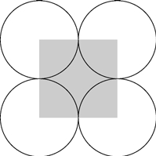
仔细观察以正方形四个角为圆心的四个圆。由于圆的半径为1，用阴影显示的正方形尺寸为2×2，所以其面积为4。正方形没有被四个圆完全覆盖。这四个圆中的每一个都覆盖了其面积的四分之一，所以四个圆所覆盖的面积的总和就是一个整圆覆盖的面积。因为半径等于1，该面积是π。
也就是说，正方形的覆盖比率是
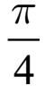
≈0.785。由于这种图案可以在所有方向上重复以至完全覆盖整个平面，我们得出这种填充方式覆盖了78.5%的平面。不错，但我们可以做得更好。与将圆的圆心排列成正方形不同，让我们把它们排列成六边形，如下图所示：
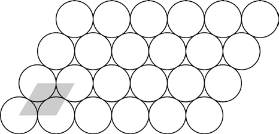
这种填充方式覆盖了超过90%的平面。我们把它作为一道几何题留给你，请算出确切的数量；答案见[1]。
将圆排列成六边形填充平面的方式是已知最为密集的方式。
现在我们要用相同的球填充一个大盒子，而不是把罐子放在一个平坦的托盘上。要想弄明白填充最为密集的方式，可以在当地的杂货店寻找摆成金字塔状的橘子。
我们会很自然地问：在三维空间里会发生什么？这个答案——或许很早以前就已被人知晓——17世纪初约翰尼斯·开普勒（Johannes Kepler）对此正式进行了陈述。开普勒声称，最为密集的球体的填充方式是将它们组成六边形（如本页中所示）然后一层层地堆叠在一起，这样球体便能尽可能紧密地靠在一起。这种排列填充了74%的空间。
开普勒球体填充的精确密度是
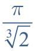
。难点是要证明其他的球体填充方式的密度都不如六边形堆积更密。虽然二维空间里的情况已经获得确认，但求证开普勒猜想在近400年中被证明是困难的。在20世纪90年代，托马斯·黑尔斯（Thomas Hales）宣布得出了一个将分析推理与大量计算相结合的非凡论证。黑尔斯的论证经过专家的仔细验证，被普遍认为是正确的。
如果画三个彼此相切的圆，则中间有一个小的空间，可以放置第四个圆，与三个大圆相切。通过这种方式，可以创建四个相切的圆的排列，如下所示：
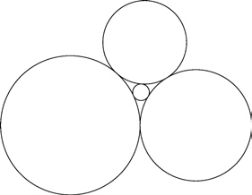
四个圆之间的大小有什么关系？或者，换一种问法，如果我们知道三个圆的半径，可以用这个信息计算出第四个圆的半径吗？
这正是笛卡尔（Descartes）曾经思考过的问题，他在17世纪初提出了一个解决方法。为了以最简单的方式呈现笛卡尔的方法，我们将一个圆的曲率（curvature）简单地定义为它的半径的倒数。换句话说，半径为2的圆的曲率等于
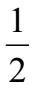
。以下是笛卡尔的解决方案。如果四个相切圆的曲率为k1，k2，k3和k4，那么这些数字必定满足以下等式：
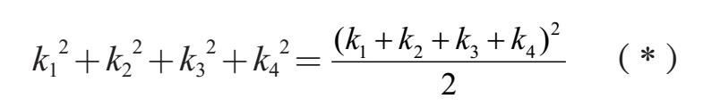
例如，如果三个大圆的半径和曲率都等于1，且内部的小圆的曲率为c，则方程（*）得
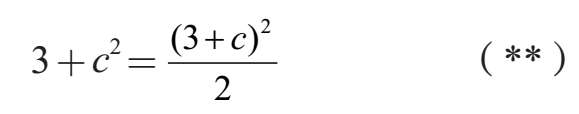
解这个二次方程得
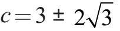
。从数值上说，即
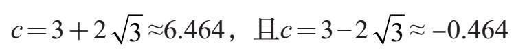
负值不适用（圆怎么能有负的半径/曲率呢？），所以我们知道小圆的曲率约为6.464，因此它的半径为
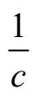
≈0.1547。还有另一种方法可以让圆相切。还是从三个彼此相切的圆开始，这回不是在它们之间的空隙插入一个小圆，而是画一个从外面与它们相接的大圆，如下所示：
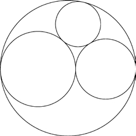
令人高兴的是，笛卡尔的解决方案同样行得通。窍门在于设想大圆的半径或曲率为负！
例如，如果我们从半径/曲率等于1的两两互切的三个圆开始，设c是恰好外接于它们的更大圆的曲率。将k1=k2=k3=1和k4=c代入方程（*），再次得到具有相同两个解的方程（**）：
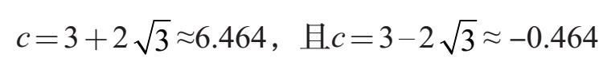
然而这一次，负值的解是有意义的，并告诉我们外接圆的半径约为
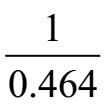
，即2.1547。换句话说，不论我们探求的是容纳在三个圆里面的小圆还是外接于它们的大圆，笛卡尔的方法都是适用的。我们简单地提供三个原始圆的曲率（作为正数）并求解第四个曲率。得出的正值的解是小圆的曲率，负值的解是大圆的曲率。
我们所做的是使用正半径/正曲率来表示圆外切，而负半径/负曲率表示圆内切。这引出了一个问题：零曲率（zero curvature）表示的是什么？正如词语本身所暗示的那样，一个曲率为零的“圆”就是一条直线。
笛卡尔的解决方法在20世纪30年代被弗雷德里克·索迪（Frederick Sooldy）重新发现，他为解决方案的优雅而感到震惊，于是写了一首题为《精准的吻》（The Kiss Precise）的诗歌进行赞美。在这首诗的第二段中，我们在韵律中找到了笛卡尔公式（*）：
这里有另一种圆相切的方式。和以前一样，我们有四个圆，但是这次它们相切的点形成了一个圆。也就是说，第一个和第二个是相切的，第二个和第三个是相切的，第三个和第四个是相切的，然后第四个和第一个是相切的。这样的排列恰好产生四个相切点，形成了一个连续的圆。
这是一个令人惊讶的结论——这四个相切点总是位于一个共同的圆上，像下图这样：
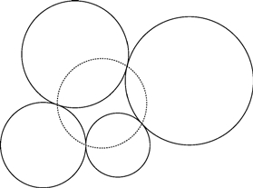
我们用布莱士·帕斯卡（Blaise Pascal）的研究结果来结束这一章。
把A，B，C，D，E，F六个点放在一个圆上。我们按照以下的方式用线段将它们连接起来，做出一个扭曲的六边形：
A→D→B→F→C→E→A
当这些线段从圆的一边交叉到另一边时，就形成三个交点。我们称这些点为X，Y和Ｚ。
帕斯卡的六边形定理断言，这三个交点X，Y，Ｚ将总是位于一条直线上！下面是图解：
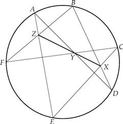
而且，如果这六个点位于椭圆上，帕斯卡的六边形定理同样适用。
[1]六边形圆填充的密度
设圆的半径为1。注意，图中所示的四个圆的圆心位于边长为2的菱形中心。
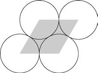
这个菱形可以被看作是粘在一起的两个等边三角形（画一条短对角线）。
边长为2的等边三角形的高度为
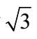
。所以这个三角形的面积是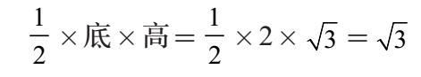
所以阴影菱形的面积为
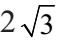
。这样的等边三角形的高度将三角形切成两个直角三角形，其斜边长度为2，一条直角边长度为1。由毕达哥拉斯定理可得高度的大小。
现在看看四个圆的阴影部分。两个阴影为圆的六分之一，另外两个的阴影为三分之一。所有的阴影区域加在一起相当于一个整圆。由于我们假定圆的半径为1，那么总面积就是π。
现在可以看出，圆所覆盖的菱形部分的比率是
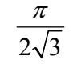
约为90.7%。